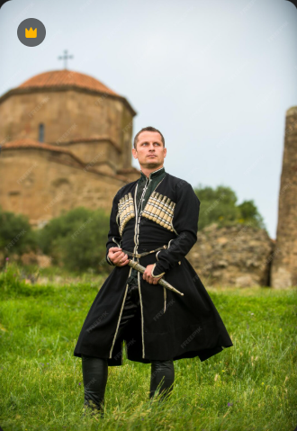
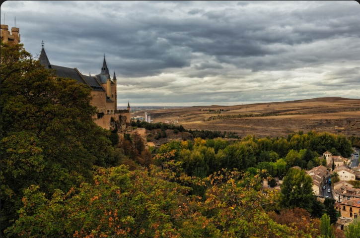
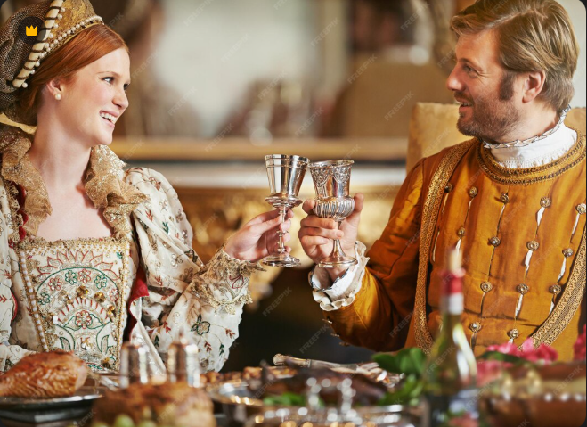
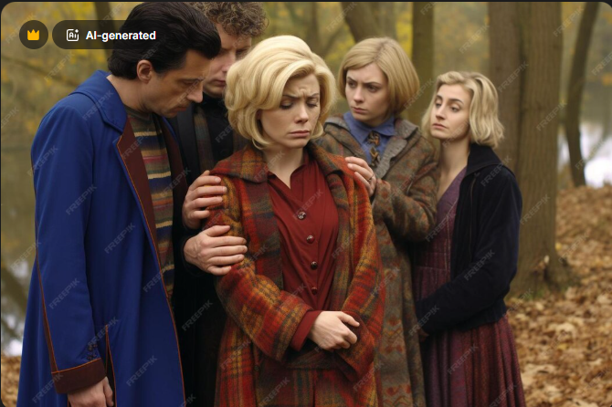
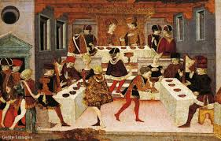
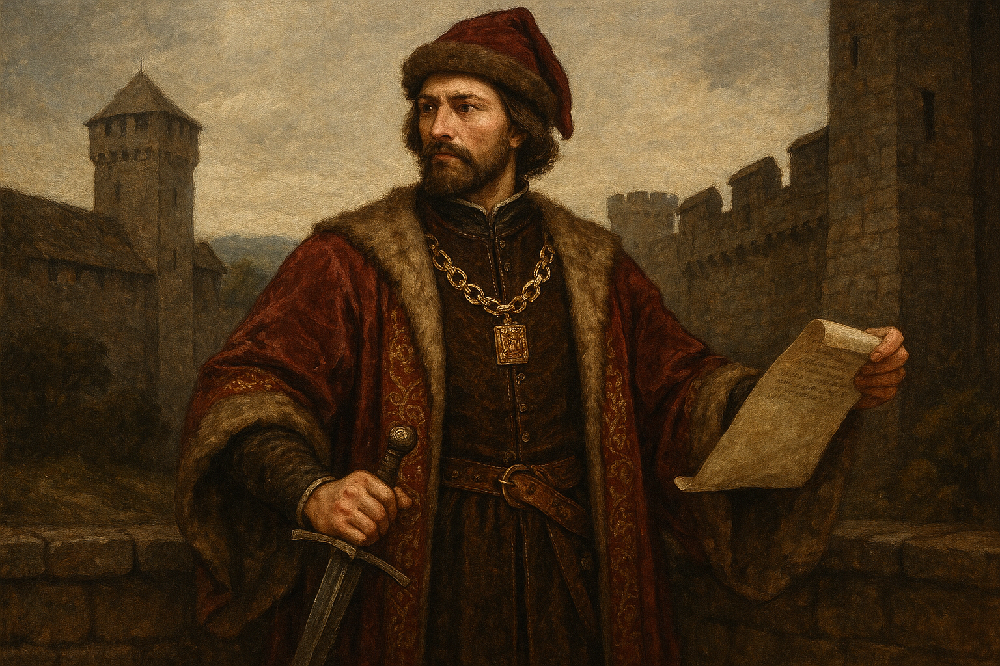
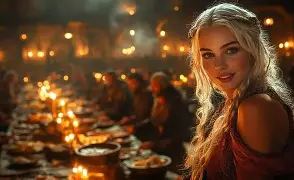
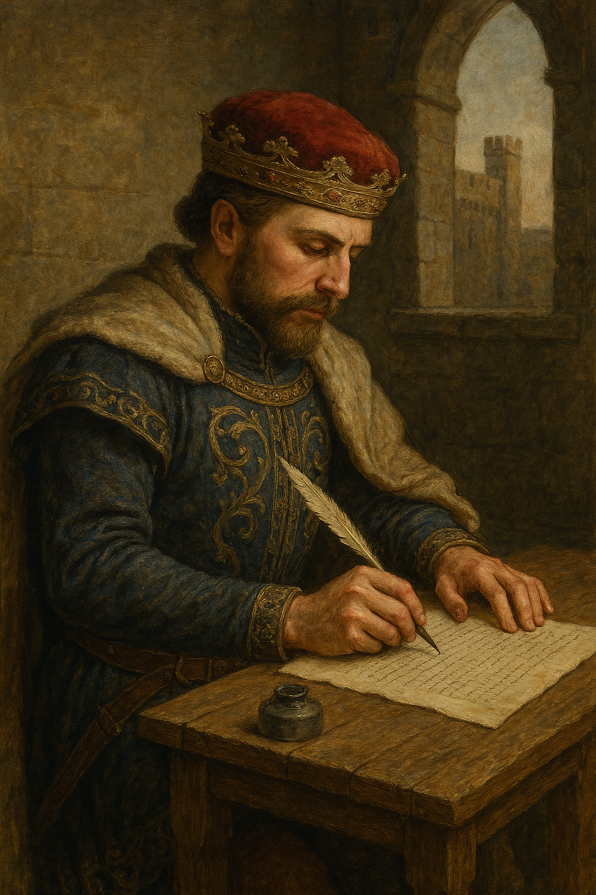

Nemesként a ruhám a rangomat mutatja. Finom gyapjúból, selyemből és prémmel díszített köpenyből öltözködöm. Övem gyakran díszes, rajta tőrrel. A ruháim színesek, minél élénkebb egy szín, annál drágább volt előállítani, ezért ez is a gazdagságomat jelzi. Csizmám jó minőségű bőrből készült. A fegyvereim, főleg a kardom, egyszerre jelentenek hatalmat és kötelességet.

Egy kőből épült várban lakom. A vár magaslaton, mert akkor könnyebb látni a környéket. A várudvaron a kovácsműhelyek, istállók, éléskamrák vannak. A vár falain kívül fekszik a birtokom: falvak, szántók, rétek, erdők. A jobbágyok háza egyszerű: vályog és fa fala nagyjavára. A várba sokan járnak: lovagok, szolgák, vendég nemesek, papok.

Egy hétköznapom korán kezdődik. Először végigjárom a birtokot, ellenőrzöm a munkákat, majd beszélek az embereimmel. Gyakran gyakorlok a lovagi fegyverekkel: lovaglás, kardvívás, lándzsakezelés. Az ünnepnapok másmilyenek: ilyenkor misére megyek, vendégeket fogadok, vagy lakomát tartunk. Szabadidőm kevés van, de ha akad, vadászatra indulok a nemes társaimmal.

A nemesek között fontos a kölcsönös tisztelet és a hűség. A barátságok gyakran politikai szövetségeken alapulnak. A vendégszeretet is lényeges: ha valaki betér hozzám, mindent megteszek, hogy jól érezze magát. A családi kötelékek erősek, a házasságok gyakran a családok közötti szövetségeket erősítik.

A középkori nemesek életét szigorú szabályok és hagyományok határozzák meg. A lovagi erények, mint a bátorság, a hűség és a tisztelet, alapvető fontosságúak. A házasságok gyakran politikai okokból köttetnek, és a családok közötti szövetségek erősítése érdekében történnek. A nemeseknek be kell tartaniuk a földesurak és a királyi hatalom által előírt törvényeket is.

Nemesként a feladataim közé tartozott, hogy katonai szolgálatot végezzek háborúban, hogy részt vegyek az országgyűlésben, és hogy tanácsokkal lásam el a királyt. Nemesként a királynak tartozom engedelmességgel. Tőlem mint földesúrtól függ a jobbágy. A jobbágy a én földjén élt és dolgozott, cserébe védelemért és a föld használati jogáért, miközben különféle szolgáltatásokkal (például robot, kilenced) tartozott nekem.

A magyar nemesek ünneplik a húsvétot, a karácsonyt, és az adventet, a mindenszenteket és a halottak napját, a Szent-Márton napját, és Simon-Júdás napját, és a farsangot. Egy ünnepen mi nemesek vadásztunk, részt vettünk lakomákon, lovagi tornákon, vadászaton, és szórakoztunk. Az ünnepek azért fontosak, mert szórakoztatóak, és a többi nemessel ünnepelni elválaszt minket a jobbágyoktól, és a fontos az egyházi ünnepek ünneplése, és a böjt tartása.

Nemesként adómentes vagyok, de van a véradó, ami azt jelenti hogy ha az országot támadás éri, akkor be kell vonulnomharcolni, de saját költségen. Így nemesként félünk a háborútól, a pestistől, mert ez minket nemeseket ugyanúgy gyilkol mint a jobbágyokat, vagy ha magunkra hargítjuk a királyt, és elkobozza a birtokainkat, vagy ha a jobbágyok felkelnekmivel felkelésük gyakran a birtokainkat és az életünket is veszélyezteti.